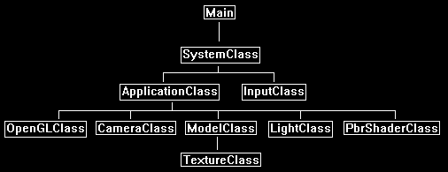

In this tutorial we will cover how to implement physically based rendering using OpenGL 4.0, C++, and GLSL.
The code in this tutorial will be built on the code from the specular mapping tutorial 21.
Physically based rendering is a category of rendering techniques that focus on describing the physical properties of a surface to determine how light reacts to that surface.
For example, the roughness of a surface caused by microfacets forces light to scatter more randomly or get absorbed, and thus reduces the reflection of light.
And if we can describe a surface using a roughness texture, we can then use physically based math formulas to determine highly accurate specular light reflection.
For this tutorial we will be looking at a physically based rendering technique known as bidirectional reflective distribution function (BRDF).
With BRDF we can describe a surface using a roughness texture and a metallic texture to create highly realistic specular lighting.
So where traditionally an artist would have to manually author a specular texture, they can now use more modern tools such as Substance Painter and produce
a roughness texture and metallic texture.
And with those two textures we can then let the shader calculate physically correct specular lighting.
So, when rendering a model, we will still use a diffuse color (albedo) texture and normal map, such as follows:


But now we will replace our specular map with the following roughness and metallic textures:


Then using the BRDF formula in our shading we can achieve highly realistic lighting such as the following:

Now the BRDF formula we will be using in this tutorial is one of the computationally fastest algorithms, and at that same time it also produces one of the better looking results.
And that is the Cook-Torrance specular BRDF.

Now what is interesting is that this formula is composed of three main components represented by DFG.
D is the normal distribution function, F is the Fresnel equation, and G is the geometry function.
For each of these functions there are numerous options you can pick from.
For example, with normal distribution function you can use Beckman NDF, Blinn-Phong NDF, Gaussian NDF, GGX NDF, Phong NDF, Trowbridge-Reitz NDF, Trowbridge-Reitz Anisotropic NDF,
Ward Anisotropic NDF, and others.
It is very much plug and play in a sense.
For this tutorial I will use the most popular DFG functions, but I just want you to be aware that there are many other functions available.
Framework
The framework for this tutorial is similar to the specular mapping tutorial 21.
But we have replaced the SpecMapShaderClass with the PbrShaderClass.

We will start the tutorial by looking at the PBR GLSL shader code:
Pbr.vs
The PBR vertex shader is going to be the same as a regular normal map/specular map vertex shader.
It will do the work of transforming the normals, binormals, tangents, and viewing direction.
////////////////////////////////////////////////////////////////////////////////
// Filename: pbr.vs
////////////////////////////////////////////////////////////////////////////////
#version 400
/////////////////////
// INPUT VARIABLES //
/////////////////////
in vec3 inputPosition;
in vec2 inputTexCoord;
in vec3 inputNormal;
in vec3 inputTangent;
in vec3 inputBinormal;
//////////////////////
// OUTPUT VARIABLES //
//////////////////////
out vec2 texCoord;
out vec3 normal;
out vec3 tangent;
out vec3 binormal;
out vec3 viewDirection;
///////////////////////
// UNIFORM VARIABLES //
///////////////////////
uniform mat4 worldMatrix;
uniform mat4 viewMatrix;
uniform mat4 projectionMatrix;
uniform vec3 cameraPosition;
////////////////////////////////////////////////////////////////////////////////
// Vertex Shader
////////////////////////////////////////////////////////////////////////////////
void main(void)
{
vec4 worldPosition;
// Calculate the position of the vertex against the world, view, and projection matrices.
gl_Position = vec4(inputPosition, 1.0f) * worldMatrix;
gl_Position = gl_Position * viewMatrix;
gl_Position = gl_Position * projectionMatrix;
// Store the texture coordinates for the pixel shader.
texCoord = inputTexCoord;
// Calculate the normal vector against the world matrix only and then normalize the final value.
normal = inputNormal * mat3(worldMatrix);
normal = normalize(normal);
// Calculate the tangent vector against the world matrix only and then normalize the final value.
tangent = inputTangent * mat3(worldMatrix);
tangent = normalize(tangent);
// Calculate the binormal vector against the world matrix only and then normalize the final value.
binormal = inputBinormal * mat3(worldMatrix);
binormal = normalize(binormal);
// Calculate the position of the vertex in the world.
worldPosition = vec4(inputPosition, 1.0f) * worldMatrix;
// Determine the viewing direction based on the position of the camera and the position of the vertex in the world.
viewDirection = cameraPosition.xyz - worldPosition.xyz;
// Normalize the viewing direction vector.
viewDirection = normalize(viewDirection);
}
Pbr.ps
////////////////////////////////////////////////////////////////////////////////
// Filename: pbr.ps
////////////////////////////////////////////////////////////////////////////////
#version 400
/////////////////////
// INPUT VARIABLES //
/////////////////////
in vec2 texCoord;
in vec3 normal;
in vec3 tangent;
in vec3 binormal;
in vec3 viewDirection;
//////////////////////
// OUTPUT VARIABLES //
//////////////////////
out vec4 outputColor;
///////////////////////
// UNIFORM VARIABLES //
///////////////////////
For textures we have our regular color texture as well as our normal map texture.
The new texture for the PBR shader will be the rmTexture which will store the roughness in the red channel, and the metallic in the blue channel.
uniform sampler2D diffuseTexture;
uniform sampler2D normalMap;
uniform sampler2D rmTexture;
uniform vec3 lightDirection;
////////////////////////////////////////////////////////////////////////////////
// Pixel Shader
////////////////////////////////////////////////////////////////////////////////
void main(void)
{
vec3 lightDir;
vec3 albedo, rmColor, bumpMap;
vec3 bumpNormal;
float roughness, metallic;
vec3 F0;
vec3 halfDirection;
float NdotH, NdotV, NdotL, HdotV;
float roughnessSqr, roughSqr2, NdotHSqr, denominator, normalDistribution;
float smithL, smithV, geometricShadow;
vec3 fresnel;
vec3 specularity;
vec4 color;
// Invert the light direction for calculations.
lightDir = -lightDirection;
Sample the three textures.
// Sample the textures.
albedo = texture(diffuseTexture, texCoord).rgb;
rmColor = texture(rmTexture, texCoord).rgb;
bumpMap = texture(normalMap, texCoord).rgb;
Perform normal mapping as per usual for a normal or specular map shader.
// Calculate the normal using the normal map.
bumpMap = (bumpMap * 2.0f) - 1.0f;
bumpNormal = (bumpMap.x * tangent) + (bumpMap.y * binormal) + (bumpMap.z * normal);
bumpNormal = normalize(bumpNormal);
Extract the roughness and metallic value from the rmTexture that we sampled.
// Get the metalic and roughness from the roughness/metalness texture.
roughness = rmColor.r;
metallic = rmColor.b;
Note that the F0 for the fresnel has been manually set to 0.04 as this is generally one of the best for all metals.
But there are tables for all the different metals if you want to get something more exact.
// Surface reflection at zero degress. Combine with albedo based on metal. Needed for fresnel calculation.
F0 = vec3(0.04f, 0.04f, 0.04f);
F0 = mix(F0, albedo, metallic);
Setup all the vectors we are going to need for our calculations.
// Setup the vectors needed for lighting calculations.
halfDirection = normalize(viewDirection + lightDir);
NdotH = max(0.0f, dot(bumpNormal, halfDirection));
NdotV = max(0.0f, dot(bumpNormal, viewDirection));
NdotL = max(0.0f, dot(bumpNormal, lightDir));
HdotV = max(0.0f, dot(halfDirection, viewDirection));
We will use GGX for our normal distribution function calculation.
// GGX normal distribution calculation.
roughnessSqr = roughness * roughness;
roughSqr2 = roughnessSqr * roughnessSqr;
NdotHSqr = NdotH * NdotH;
denominator = (NdotHSqr * (roughSqr2 - 1.0f) + 1.0f);
denominator = 3.14159265359f * (denominator * denominator);
normalDistribution = roughSqr2 / denominator;
We will use Schlick-GGX for our geometry function calculation.
// Schlick geometric shadow calculation.
smithL = NdotL / (NdotL * (1.0f - roughnessSqr) + roughnessSqr);
smithV = NdotV / (NdotV * (1.0f - roughnessSqr) + roughnessSqr);
geometricShadow = smithL * smithV;
We will use Fresnel Schlick for the fresnel calculation.
// Fresnel shlick approximation for fresnel term calculation.
fresnel = F0 + (1.0f - F0) * pow(1.0f - HdotV, 5.0f);
With the DFG variables calculated we can now perform the Cook-Torrance specular BRDF calculation.
Do note we need to add a small offset to the denominator to prevent divide by zero in HLSL.
If we don't, we will get incorrect black patches in certain areas.
// Now calculate the bidirectional reflectance distribution function.
specularity = (normalDistribution * fresnel * geometricShadow) / ((4.0f * (NdotL * NdotV)) + 0.00001f);
// Final light equation.
color.rgb = albedo + specularity;
color.rgb = color.rgb * NdotL;
// Set the alpha to 1.0f.
color = vec4(color.rgb, 1.0f);
outputColor = color;
}
Pbrshaderclass.h
The PbrShaderClass is almost identical to our regular specular map shader.
However, we won't need all of the specular light values since the roughness and metallic texture will be used to calculate the PBR specularity.
////////////////////////////////////////////////////////////////////////////////
// Filename: pbrshaderclass.h
////////////////////////////////////////////////////////////////////////////////
#ifndef _PBRSHADERCLASS_H_
#define _PBRSHADERCLASS_H_
//////////////
// INCLUDES //
//////////////
#include <iostream>
using namespace std;
///////////////////////
// MY CLASS INCLUDES //
///////////////////////
#include "openglclass.h"
////////////////////////////////////////////////////////////////////////////////
// Class name: PbrShaderClass
////////////////////////////////////////////////////////////////////////////////
class PbrShaderClass
{
public:
PbrShaderClass();
PbrShaderClass(const PbrShaderClass&);
~PbrShaderClass();
bool Initialize(OpenGLClass*);
void Shutdown();
bool SetShaderParameters(float*, float*, float*, float*, float*);
private:
bool InitializeShader(char*, char*);
void ShutdownShader();
char* LoadShaderSourceFile(char*);
void OutputShaderErrorMessage(unsigned int, char*);
void OutputLinkerErrorMessage(unsigned int);
private:
OpenGLClass* m_OpenGLPtr;
unsigned int m_vertexShader;
unsigned int m_fragmentShader;
unsigned int m_shaderProgram;
};
#endif
Pbrshaderclass.cpp
////////////////////////////////////////////////////////////////////////////////
// Filename: pbrshaderclass.cpp
////////////////////////////////////////////////////////////////////////////////
#include "pbrshaderclass.h"
PbrShaderClass::PbrShaderClass()
{
m_OpenGLPtr = 0;
}
PbrShaderClass::PbrShaderClass(const PbrShaderClass& other)
{
}
PbrShaderClass::~PbrShaderClass()
{
}
bool PbrShaderClass::Initialize(OpenGLClass* OpenGL)
{
char vsFilename[128];
char psFilename[128];
bool result;
// Store the pointer to the OpenGL object.
m_OpenGLPtr = OpenGL;
// Set the location and names of the shader files.
strcpy(vsFilename, "../Engine/pbr.vs");
strcpy(psFilename, "../Engine/pbr.ps");
// Initialize the vertex and pixel shaders.
result = InitializeShader(vsFilename, psFilename);
if(!result)
{
return false;
}
return true;
}
void PbrShaderClass::Shutdown()
{
// Shutdown the shader.
ShutdownShader();
// Release the pointer to the OpenGL object.
m_OpenGLPtr = 0;
return;
}
bool PbrShaderClass::InitializeShader(char* vsFilename, char* fsFilename)
{
const char* vertexShaderBuffer;
const char* fragmentShaderBuffer;
int status;
// Load the vertex shader source file into a text buffer.
vertexShaderBuffer = LoadShaderSourceFile(vsFilename);
if(!vertexShaderBuffer)
{
return false;
}
// Load the fragment shader source file into a text buffer.
fragmentShaderBuffer = LoadShaderSourceFile(fsFilename);
if(!fragmentShaderBuffer)
{
return false;
}
// Create a vertex and fragment shader object.
m_vertexShader = m_OpenGLPtr->glCreateShader(GL_VERTEX_SHADER);
m_fragmentShader = m_OpenGLPtr->glCreateShader(GL_FRAGMENT_SHADER);
// Copy the shader source code strings into the vertex and fragment shader objects.
m_OpenGLPtr->glShaderSource(m_vertexShader, 1, &vertexShaderBuffer, NULL);
m_OpenGLPtr->glShaderSource(m_fragmentShader, 1, &fragmentShaderBuffer, NULL);
// Release the vertex and fragment shader buffers.
delete [] vertexShaderBuffer;
vertexShaderBuffer = 0;
delete [] fragmentShaderBuffer;
fragmentShaderBuffer = 0;
// Compile the shaders.
m_OpenGLPtr->glCompileShader(m_vertexShader);
m_OpenGLPtr->glCompileShader(m_fragmentShader);
// Check to see if the vertex shader compiled successfully.
m_OpenGLPtr->glGetShaderiv(m_vertexShader, GL_COMPILE_STATUS, &status);
if(status != 1)
{
// If it did not compile then write the syntax error message out to a text file for review.
OutputShaderErrorMessage(m_vertexShader, vsFilename);
return false;
}
// Check to see if the fragment shader compiled successfully.
m_OpenGLPtr->glGetShaderiv(m_fragmentShader, GL_COMPILE_STATUS, &status);
if(status != 1)
{
// If it did not compile then write the syntax error message out to a text file for review.
OutputShaderErrorMessage(m_fragmentShader, fsFilename);
return false;
}
// Create a shader program object.
m_shaderProgram = m_OpenGLPtr->glCreateProgram();
// Attach the vertex and fragment shader to the program object.
m_OpenGLPtr->glAttachShader(m_shaderProgram, m_vertexShader);
m_OpenGLPtr->glAttachShader(m_shaderProgram, m_fragmentShader);
// Bind the shader input variables.
m_OpenGLPtr->glBindAttribLocation(m_shaderProgram, 0, "inputPosition");
m_OpenGLPtr->glBindAttribLocation(m_shaderProgram, 1, "inputTexCoord");
m_OpenGLPtr->glBindAttribLocation(m_shaderProgram, 2, "inputNormal");
m_OpenGLPtr->glBindAttribLocation(m_shaderProgram, 3, "inputTangent");
m_OpenGLPtr->glBindAttribLocation(m_shaderProgram, 4, "inputBinormal");
// Link the shader program.
m_OpenGLPtr->glLinkProgram(m_shaderProgram);
// Check the status of the link.
m_OpenGLPtr->glGetProgramiv(m_shaderProgram, GL_LINK_STATUS, &status);
if(status != 1)
{
// If it did not link then write the syntax error message out to a text file for review.
OutputLinkerErrorMessage(m_shaderProgram);
return false;
}
return true;
}
void PbrShaderClass::ShutdownShader()
{
// Detach the vertex and fragment shaders from the program.
m_OpenGLPtr->glDetachShader(m_shaderProgram, m_vertexShader);
m_OpenGLPtr->glDetachShader(m_shaderProgram, m_fragmentShader);
// Delete the vertex and fragment shaders.
m_OpenGLPtr->glDeleteShader(m_vertexShader);
m_OpenGLPtr->glDeleteShader(m_fragmentShader);
// Delete the shader program.
m_OpenGLPtr->glDeleteProgram(m_shaderProgram);
return;
}
char* PbrShaderClass::LoadShaderSourceFile(char* filename)
{
FILE* filePtr;
char* buffer;
long fileSize, count;
int error;
// Open the shader file for reading in text modee.
filePtr = fopen(filename, "r");
if(filePtr == NULL)
{
return 0;
}
// Go to the end of the file and get the size of the file.
fseek(filePtr, 0, SEEK_END);
fileSize = ftell(filePtr);
// Initialize the buffer to read the shader source file into, adding 1 for an extra null terminator.
buffer = new char[fileSize + 1];
// Return the file pointer back to the beginning of the file.
fseek(filePtr, 0, SEEK_SET);
// Read the shader text file into the buffer.
count = fread(buffer, 1, fileSize, filePtr);
if(count != fileSize)
{
return 0;
}
// Close the file.
error = fclose(filePtr);
if(error != 0)
{
return 0;
}
// Null terminate the buffer.
buffer[fileSize] = '\0';
return buffer;
}
void PbrShaderClass::OutputShaderErrorMessage(unsigned int shaderId, char* shaderFilename)
{
long count;
int logSize, error;
char* infoLog;
FILE* filePtr;
// Get the size of the string containing the information log for the failed shader compilation message.
m_OpenGLPtr->glGetShaderiv(shaderId, GL_INFO_LOG_LENGTH, &logSize);
// Increment the size by one to handle also the null terminator.
logSize++;
// Create a char buffer to hold the info log.
infoLog = new char[logSize];
// Now retrieve the info log.
m_OpenGLPtr->glGetShaderInfoLog(shaderId, logSize, NULL, infoLog);
// Open a text file to write the error message to.
filePtr = fopen("shader-error.txt", "w");
if(filePtr == NULL)
{
cout << "Error opening shader error message output file." << endl;
return;
}
// Write out the error message.
count = fwrite(infoLog, sizeof(char), logSize, filePtr);
if(count != logSize)
{
cout << "Error writing shader error message output file." << endl;
return;
}
// Close the file.
error = fclose(filePtr);
if(error != 0)
{
cout << "Error closing shader error message output file." << endl;
return;
}
// Notify the user to check the text file for compile errors.
cout << "Error compiling shader. Check shader-error.txt for error message. Shader filename: " << shaderFilename << endl;
return;
}
void PbrShaderClass::OutputLinkerErrorMessage(unsigned int programId)
{
long count;
FILE* filePtr;
int logSize, error;
char* infoLog;
// Get the size of the string containing the information log for the failed shader compilation message.
m_OpenGLPtr->glGetProgramiv(programId, GL_INFO_LOG_LENGTH, &logSize);
// Increment the size by one to handle also the null terminator.
logSize++;
// Create a char buffer to hold the info log.
infoLog = new char[logSize];
// Now retrieve the info log.
m_OpenGLPtr->glGetProgramInfoLog(programId, logSize, NULL, infoLog);
// Open a file to write the error message to.
filePtr = fopen("linker-error.txt", "w");
if(filePtr == NULL)
{
cout << "Error opening linker error message output file." << endl;
return;
}
// Write out the error message.
count = fwrite(infoLog, sizeof(char), logSize, filePtr);
if(count != logSize)
{
cout << "Error writing linker error message output file." << endl;
return;
}
// Close the file.
error = fclose(filePtr);
if(error != 0)
{
cout << "Error closing linker error message output file." << endl;
return;
}
// Pop a message up on the screen to notify the user to check the text file for linker errors.
cout << "Error linking shader program. Check linker-error.txt for message." << endl;
return;
}
bool PbrShaderClass::SetShaderParameters(float* worldMatrix, float* viewMatrix, float* projectionMatrix, float* cameraPosition, float* lightDirection)
{
float tpWorldMatrix[16], tpViewMatrix[16], tpProjectionMatrix[16];
int location;
// Transpose the matrices to prepare them for the shader.
m_OpenGLPtr->MatrixTranspose(tpWorldMatrix, worldMatrix);
m_OpenGLPtr->MatrixTranspose(tpViewMatrix, viewMatrix);
m_OpenGLPtr->MatrixTranspose(tpProjectionMatrix, projectionMatrix);
// Install the shader program as part of the current rendering state.
m_OpenGLPtr->glUseProgram(m_shaderProgram);
// Set the world matrix in the vertex shader.
location = m_OpenGLPtr->glGetUniformLocation(m_shaderProgram, "worldMatrix");
if(location == -1)
{
cout << "World matrix not set." << endl;
}
m_OpenGLPtr ->glUniformMatrix4fv(location, 1, false, tpWorldMatrix);
// Set the view matrix in the vertex shader.
location = m_OpenGLPtr->glGetUniformLocation(m_shaderProgram, "viewMatrix");
if(location == -1)
{
cout << "View matrix not set." << endl;
}
m_OpenGLPtr->glUniformMatrix4fv(location, 1, false, tpViewMatrix);
// Set the projection matrix in the vertex shader.
location = m_OpenGLPtr->glGetUniformLocation(m_shaderProgram, "projectionMatrix");
if(location == -1)
{
cout << "Projection matrix not set." << endl;
}
m_OpenGLPtr->glUniformMatrix4fv(location, 1, false, tpProjectionMatrix);
// Set the camera position in the vertex shader.
location = m_OpenGLPtr->glGetUniformLocation(m_shaderProgram, "cameraPosition");
if(location == -1)
{
cout << "Camera position not set." << endl;
}
m_OpenGLPtr->glUniform3fv(location, 1, cameraPosition);
// Set the diffuse texture in the pixel shader to use the data from the first texture unit.
location = m_OpenGLPtr->glGetUniformLocation(m_shaderProgram, "diffuseTexture");
if(location == -1)
{
cout << "Diffuse texture not set." << endl;
}
m_OpenGLPtr->glUniform1i(location, 0);
// Set the normal map texture in the pixel shader to use the data from the second texture unit.
location = m_OpenGLPtr->glGetUniformLocation(m_shaderProgram, "normalMap");
if(location == -1)
{
cout << "Normal map texture not set." << endl;
}
m_OpenGLPtr->glUniform1i(location, 1);
Setting the roughness and metallic texture replaces setting our specular lighting variables for PBR.
// Set the roughness metal texture in the pixel shader to use the data from the third texture unit.
location = m_OpenGLPtr->glGetUniformLocation(m_shaderProgram, "rmTexture");
if(location == -1)
{
cout << "Roughness metal texture not set." << endl;
}
m_OpenGLPtr->glUniform1i(location, 2);
// Set the light direction in the pixel shader.
location = m_OpenGLPtr->glGetUniformLocation(m_shaderProgram, "lightDirection");
if(location == -1)
{
cout << "Light direction not set." << endl;
}
m_OpenGLPtr->glUniform3fv(location, 1, lightDirection);
return true;
}
Applicationclass.h
////////////////////////////////////////////////////////////////////////////////
// Filename: applicationclass.h
////////////////////////////////////////////////////////////////////////////////
#ifndef _APPLICATIONCLASS_H_
#define _APPLICATIONCLASS_H_
/////////////
// GLOBALS //
/////////////
const bool FULL_SCREEN = false;
const bool VSYNC_ENABLED = true;
const float SCREEN_NEAR = 0.3f;
const float SCREEN_DEPTH = 1000.0f;
///////////////////////
// MY CLASS INCLUDES //
///////////////////////
#include "inputclass.h"
#include "openglclass.h"
#include "cameraclass.h"
#include "modelclass.h"
#include "lightclass.h"
Add the include for the new PBR shader class.
#include "pbrshaderclass.h"
////////////////////////////////////////////////////////////////////////////////
// Class Name: ApplicationClass
////////////////////////////////////////////////////////////////////////////////
class ApplicationClass
{
public:
ApplicationClass();
ApplicationClass(const ApplicationClass&);
~ApplicationClass();
bool Initialize(Display*, Window, int, int);
void Shutdown();
bool Frame(InputClass*);
private:
bool Render(float);
private:
OpenGLClass* m_OpenGL;
CameraClass* m_Camera;
ModelClass* m_Model;
LightClass* m_Light;
Add the PBR shader class object to our application class.
PbrShaderClass* m_PbrShader;
};
#endif
Applicationclass.cpp
////////////////////////////////////////////////////////////////////////////////
// Filename: applicationclass.cpp
////////////////////////////////////////////////////////////////////////////////
#include "applicationclass.h"
ApplicationClass::ApplicationClass()
{
m_OpenGL = 0;
m_Camera = 0;
m_Model = 0;
m_Light = 0;
m_PbrShader = 0;
}
ApplicationClass::ApplicationClass(const ApplicationClass& other)
{
}
ApplicationClass::~ApplicationClass()
{
}
bool ApplicationClass::Initialize(Display* display, Window win, int screenWidth, int screenHeight)
{
char modelFilename[128], diffuseFilename[128], normalFilename[128], rmFilename[128];
bool result;
// Create and initialize the OpenGL object.
m_OpenGL = new OpenGLClass;
result = m_OpenGL->Initialize(display, win, screenWidth, screenHeight, SCREEN_NEAR, SCREEN_DEPTH, VSYNC_ENABLED);
if(!result)
{
cout << "Error: Could not initialize the OpenGL object." << endl;
return false;
}
// Create and initialize the camera object.
m_Camera = new CameraClass;
m_Camera->SetPosition(0.0f, 0.0f, -5.0f);
m_Camera->Render();
When we set the light, we only need the direction now.
No other specular light variables will be required.
// Create and initialize the light object.
m_Light = new LightClass;
m_Light->SetDirection(0.5f, 0.5f, 0.5f);
Create our sphere model with the diffuse, normal, and roughness/metallic textures.
// Create and initialize the sphere model object.
m_Model = new ModelClass;
strcpy(modelFilename, "../Engine/data/sphere.txt");
strcpy(diffuseFilename, "../Engine/data/pbr_albedo.tga");
strcpy(normalFilename, "../Engine/data/pbr_normal.tga");
strcpy(rmFilename, "../Engine/data/pbr_roughmetal.tga");
result = m_Model->Initialize(m_OpenGL, modelFilename, diffuseFilename, true, normalFilename, true, rmFilename, true);
if(!result)
{
cout << "Error: Could not initialize the model object." << endl;
return false;
}
Create our new PBR shader class object here.
// Create and initialize the PBR shader object.
m_PbrShader = new PbrShaderClass;
result = m_PbrShader->Initialize(m_OpenGL);
if(!result)
{
cout << "Error: Could not initialize the PBR shader object." << endl;
return false;
}
return true;
}
void ApplicationClass::Shutdown()
{
// Release the PBR shader object.
if(m_PbrShader)
{
m_PbrShader->Shutdown();
delete m_PbrShader;
m_PbrShader = 0;
}
// Release the light object.
if(m_Light)
{
delete m_Light;
m_Light = 0;
}
// Release the model object.
if(m_Model)
{
m_Model->Shutdown();
delete m_Model;
m_Model = 0;
}
// Release the camera object.
if(m_Camera)
{
delete m_Camera;
m_Camera = 0;
}
// Release the OpenGL object.
if(m_OpenGL)
{
m_OpenGL->Shutdown();
delete m_OpenGL;
m_OpenGL = 0;
}
return;
}
bool ApplicationClass::Frame(InputClass* Input)
{
static float rotation = 0.0f;
bool result;
// Check if the escape key has been pressed, if so quit.
if(Input->IsEscapePressed() == true)
{
return false;
}
// Update the rotation variable each frame.
rotation -= 0.0174532925f * 0.1f;
if(rotation < 0.0f)
{
rotation += 360.0f;
}
// Render the graphics scene.
result = Render(rotation);
if(!result)
{
return false;
}
return true;
}
bool ApplicationClass::Render(float rotation)
{
float worldMatrix[16], viewMatrix[16], projectionMatrix[16];
float cameraPosition[3], lightDirection[3];
bool result;
// Clear the buffers to begin the scene.
m_OpenGL->BeginScene(0.0f, 0.0f, 0.0f, 1.0f);
// Get the world, view, and projection matrices from the opengl and camera objects.
m_Camera->GetViewMatrix(viewMatrix);
m_OpenGL->GetProjectionMatrix(projectionMatrix);
// Rotate the world matrix by the rotation value so that the model will spin.
m_OpenGL->MatrixRotationY(worldMatrix, rotation);
// Get the camera position.
m_Camera->GetPosition(cameraPosition);
// Get the light properties.
m_Light->GetDirection(lightDirection);
Render the model using the PBR shader and the textures from the model object.
// Set the PBR shader as the current shader program and set the parameters that it will use for rendering.
result = m_PbrShader->SetShaderParameters(worldMatrix, viewMatrix, projectionMatrix, cameraPosition, lightDirection);
if(!result)
{
return false;
}
// Set the three textures for the PBR pixel shader.
m_Model->SetTexture1(0); // Diffuse
m_Model->SetTexture2(1); // Normal
m_Model->SetTexture3(2); // Roughess and Metalness
// Render the model using the PBR shader.
m_Model->Render();
// Present the rendered scene to the screen.
m_OpenGL->EndScene();
return true;
}
Summary
With the use of PBR rendering we can have highly realistic specular reflections.
Great sites like FreePBR offer great texture resources for learning and experimenting with PBR rendering.
They also have higher resolution textures which makes a huge difference in the graphical fidelity of the PBR effect.
Do note most textures on sites like this are usually are exported in "OpenGL" format.
If so the green/Y channel needs to be inverted to change from right-handed to left-handed normal map coordinates.
Also, both the roughness and metallic texture are single channel grey scale images.
So, you need to create a new texture and put them on the red and blue channels if you are using this PBR shader unedited.
To Do Exercises
1. Compile and run the program to see a rotating sphere rendered using physically based rendering. Press escape to quit.
2. Download some textures from the FreePBR website and try them out using the PBR shader.
3. Replace the normal distribution, geometry shadow, and fresnel sections of code with functions for each.
4. Research the different normal distribution and geometry functions to see the differences they can offer to your PBR shaders.
5. Render two spheres at the same time with the PBR shader, but each sphere rendered with different NDF and geometry shadow functions to see the difference.
Source Code
Source Code and Data Files: gl4linuxtut52_src.tar.gz